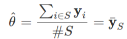
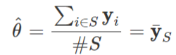
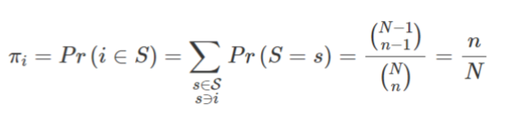
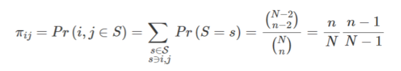
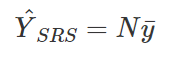
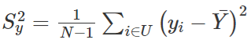
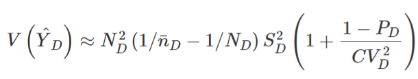
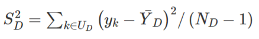
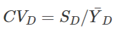
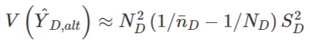

166 Surveys, Sampling Methods
TOC
- Misc
- Terms
- Probabilistic Sampling Methods
- Simple Random Sampling (SRS)
- Unequal Probability Sampling
- Cluster Sampling
- Stratified Sampling
- Multi-Stage Sampling
- Systematic Sampling
- Non-Probabilistic Sampling Methods
- Quota Sampling
- Judgemental Sampling (aka Purposive Sampling)
- Convenience Sampling
- Snowball Sampling
Misc
- Notes from:
Terms
- In a survey setting,
- U denotes a finite population (i.e. target population) of N units
- A sample s of n units (n≤N) is taken from U
- design weights - the average number of units in the population that each sampled unit represents. This weight is determined by the sampling method and is an important part of the estimation process.
- empirical design - when the inclusion probabilities (see below) are unknown
- See Non-Probabilistic Sampling Methods
- Examples
- Quota Sampling - units are selected so to reflect known structures for the population
- Expert Sampling - units are selected according to expert advice
- Network Sampling - existing sample units recruit future units from among their ‘network’.
- estimator of the parameter, θ, is a function of sample observations
- Example: sample mean
- population mean of the study variable can be estimated by the mean value over the sample observations
- Example: sample mean
- inclusion probability - the probability for a unit to appear in the sample
- probabilistic design - when every element in the population has a fixed, known-in-advance inclusion probabilities
- sampling bias - the probability distribution in the collected dataset deviates from its true natural distribution one would actually observe in the wilderness.
- sampling frame - an exhaustive list of all the individuals which comprise the target population (Also see Surveys, Design >> Sources of Error >> Coverage or Frame Error)

- study parameter (θ) - linear parameter of the study variable, such as a mean, a total or a proportion, or a more complex one such as a ratio between two population means, a correlation or a regression coefficient, a quantile (e.g. median, quartile, quintile or decile) or an inequality measure such as the Gini or the Theil coefficient. (also see estimator)
- study variable (y)
- Quantitative - numerical information (e.g. the total disposable income or the total food consumption)
- Qualitative - categorical information (e.g. gender, citizenship, country of birth, marital status, occupation or activity status)
Probabilistic Sampling Methods
- Simple Random Sampling (SRS)
- A method of selecting n units out of N such that every sample s of size n has the same probability of selection
- Simple Inclusion Probability - the probability for a unit to appear in the sample
- n is the size of sample, s, and N is the target population size
- Double Inclusion Probability - the probability for 2 units to appear in the sample
- where i ≠ j
- n is the size of sample, s, and N is the target population size
- Without Replacement (most common)
- At the first extraction, each one of the population units will have an equal probability of selection, 1/N.
- At the second extraction, the remaining N-1 units will have a selection probability equal to 1/(N-1). Etc.
- With Replacement - all the units of the population will have all the same probability of being selected 1/N Advantages:
- It’s simple and doesn’t use auxiliary information on the population
- the selection is random and, then, any unit is favoured
- the sample is representative Disadvantages:
- the choice of the element is completely random
- a complete list of the population units is necessary
- it’s time and cost consuming
- Estimated Total of the study variable, Ŷ
- where N is the target population size
- Estimated Mean of the study variable, Ȳ

- where ȳ is the sample mean
- Variance for Estimated Total
.png)
- S2y is the dispersion of the study variable, y, over the population U
- Sampling Rate or Sampling Fraction: f = n / N
- Finite Population Correction Factor: 1 − f
- Variance for Estimated Mean
.1.png)
- Sample Dispersion
.2.png)
- Sample Dispersion
- Estimated size of subpopulation, A
.png)
- pA is the sample proportion of units from target subpopulation, UA
- i.e. (I think) nA/NA
- Example of Subpopulations
- Total number of males or females in the population
- Total number of elderly people aged more than 65 in the population
- Total number of establishments having more than 50 employees in a certain geographical region or in a sector of activity.
- pA is the sample proportion of units from target subpopulation, UA
- Variance of sample proportion of subpopulation, A
.png)
- Domain Parameter Estimation
Refers to estimating population parameters for sub-populations of interest, called domains. For instance, one may wish to estimate the mean household disposable income broken down by personal characteristics such as age, gender or citizenship
- I think this is different from “Estimated size of subpopulation, A” (above) because we’re estimating a study variable of subpopulation vs the size of the subpopulation
Estimated Total of the study variable
- ŶD = (N*nD / n) * ȳD
- ȳD the sample mean of study variable, y, within the domain, D
- nD is the total number of sample units from the sample s which fall into domain, D
- Sample size nD is a random variable of mean n̄D = n*PD where PD = ND / N
- I guess this is a random variable because this is strictly SRS, so you aren’t stratifying by D when you sample the target population. Therefore, the number of samples from D you happen to get will be random and have a distribution.
- Sample size nD is a random variable of mean n̄D = n*PD where PD = ND / N
- Alternative: When the size of the domain, ND, of UD is known
- ŶD, alt = ND * ȳD
- This formula has a provably (see ebook in Misc) lower variance than the original formula
- ŶD = (N*nD / n) * ȳD
Variance for Estimated Total
S2D
CV2D
Assumes the population sizes, N and ND, are “large enough.”
For the Alternative Estimated Total formula (see above)
- Assumes the sample size, nD, is “large enough.”
- A provably lower variance (see ebook in Misc)
- Unequal Probability Sampling
- Different units in the population will have different probabilities of being included in a sample.
- Unlike SRS, where each unit has an equal probability of being included in the sample
- Unequal probability sampling can result in estimators having higher precision than when simple random sampling or other equal probability designs are used.
- Emphasizes the importance of utilizing so-called “auxiliary” information as a way to boost sampling precision. (see πk below)
- Horvitz-Thompson estimator (without replacement selection)
- Estimated Total, Ŷ, for the study variable
.png)
- dk = 1/πk is the design weight of unit, k, of sample, s
- πk is the inclusion probability for unit, k, of sample, s
- In practice, as the study variable y is unknown, the inclusion probabilities should be taken proportional to an auxiliary variable x assumed to have a linear relationship with y: π ∝ x (probability proportional to size sampling)
- An inclusion probability that is optimal with respect to one study variable may be far from optimal with other study variables. In case of multi-purpose surveys, this is a major problem which generally prevents from using unequal probability sampling.
- Alternatively, survey statisticians use stratification as we know it always make accuracy better no matter the study variable.
- Estimated Total, Ŷ, for the study variable
- Hansen-Hurwitz estimator has been proposed in case of sampling with replacement.
- Different units in the population will have different probabilities of being included in a sample.
- Cluster Sampling
- Assumes population has natural clusters (e.g. family unit). Different from Stratified Sampling in that the clustering characteristic(s) is the same for all clusters (between cluster variation = 0) and the within cluster variation is heterogeneous (i.e. within cluster variation != 0).
- Example: family units in NYC are chosen randomly chosen. The variation between family members is whats studied. Advantages:
- it’s efficient when the clusters constitute naturally formed subgroups, for which we don’t possess the list of the population
- Studying clusters can be less expensive than simple random sampling. Disadvantages:
- the conditions of the clusters aren’t always respected. The clusters may contain similar elements.
- Assumes population has natural clusters (e.g. family unit). Different from Stratified Sampling in that the clustering characteristic(s) is the same for all clusters (between cluster variation = 0) and the within cluster variation is heterogeneous (i.e. within cluster variation != 0).
- Stratified Sampling (See “Decreasing the sampling variance of the treatment effect” section)
- Notes from Chapter 3 Stratification
- The population is classified into subpopulations, called strata, based on some categorical characteristics, such as age, gender, education
- Assumes between group variation is not 0 (i.e. heterogeneous) and within-group variation is 0 (i.e. homogeneous)
- Reasons for stratification
- Baseline for group A different from group B
- Reason to believe the effect for group A will be different from group B
- Advantages:
- it can be more efficient than simple random sampling
- there is less risk of obtaining non-representative samples
- Disadvantages:
- It needs the availability of auxiliary information on the population.
- there are strict conditions for the strata
- Estimated Total, Ŷ, for the study variable and the Estimated Mean of the study variable, Ȳ (respectively)
.png)
- Assumes SRS within each strata
- N is the population size and Nh is the population strata size for strata, h
- Wh is the frequency weight where Wh = Nh / N
- ȳh is the sample mean of strata, h
- Variance for Estimated Total assuming SRS within strata
.png)
- nh is the sample size for stratum, h
- Stratum Sampling Fraction: fh = nh / Nh = n / N (which is just f)
- assumes fh is the same for each strata
- Stratum Dispersion: S2h should be similar to the sample dispersion for SRS below, except the domain of the variables is within stratum, h (e.g. n → nh, ȳ → ȳh, etc.)
- Sample Dispersion for SRS
.1.png)
- Sample Dispersion for SRS
- Variance for Estimated Mean assuming SRS within strata V(ȲSTSRS) = (1 - f) S2w / nh
- nh will be the same for all h, so it’s constant in this case
- Sampling Fraction: f = N / n
- n is the overall sample size
- Within-Stratum Dispersion: S2w
.png)
- S2h: See above
- N is the population size and Nh is the population strata size for strata, h
- Wh is the frequency weight where Wh = Nh / N
- Design weights: di
.1.png)
- For SRS, design weights are equal within each stratum
- sh is the set of samples within stratum, h
- Stratum sample size allocation methods
- Let assume the overall sample size, n, has been fixed (generally out of budgetary considerations). We seek to determine which sample size, nh, is to be drawn out of each stratum in order to achieve statistical optimality under cost considerations.
- Equal Allocation
- neqh = n / H
- H is the number of strata
- Performs poorly when the dispersions, S2h, are different from one stratum to another
- Proportional Allocation
- Consists of selecting samples in each stratum in proportion to the size, Nh, of the stratum population
- nproph = (n*Nh) / N = n*Wh
- Variance
.png)
- Optimal or Neyman Allocation
- Seeks to minimize the variance under the cost constraint
.1.png)
- C0 is the overall budget available and ch the average survey cost for an individual in stratum h.
- Strata Sample Size with Cost Constraint
.2.png)
- Strata Sample Size without Cost Constraint
.png)
- Variance
.1.png)
- S̄ must be the mean sqrt dispersion across all stratum
- Contrary to proportional allocation, the Neyman allocation is variable-specific: optimality is defined with respect to one study variable, and what is optimal with respect to one variable may be far from optimal with respect to another.
- The gain in accuracy as compared to proportional allocation is pretty small. That’s why in practice proportional allocation is often preferred to optimal allocation.
- Seeks to minimize the variance under the cost constraint
- Balanced Allocation
.png)
- ñ is a subsample of n that is equally allocated (see above) among the strata which insures minimal precision within the strata (i.e. locally)
- The rest of the sample (n - ñ) can be allocated using either proportional or optimal allocations (see above) in order to optimize accuracy for the overall sample (i.e. globally)
- Both proportional and Neyman allocations increase sample accuracy at global level, but may happen to perform very poorly when it comes to strata (e.g. regional) level estimates.
- Multi-Stage Sampling
- Useful when no sampling frame is available
- Stages
- At first-stage sampling, a sample of Primary Sampling Units (PSU) is selected using a probabilistic design (e.g. simple random sampling or other, with or without stratification)
- At second-stage sampling, a sub-sample of Secondary Sampling Units (SSU) is selected within each PSU selected at first-stage. The selection of SSU is supposed to be independent from one PSU to another.
- At third-stage sampling a sample of Tertiary Sampling Units can be selected with each of the SSU selected at second stage.
- etc.
- Example: (given an absence of any frame of individuals)
- Select a sample of municipalities (first-stage sampling),
- Select a sample of neighbourhoods (second-stage sampling) within each selected municipality,
- Select a sample of households (third-stage sampling) within each of the neighbourhoods selected a second stage
- Select a sample of individuals (fourth-stage sampling) within each household.
- Advantages:
- Can be more efficient than using only 1 of the sampling strategies
- Can decrease sample size if there are numerous units within strata or clusters
- Disadvantages:
- If sampling assumptions aren’t valid, multi-stage sampling results to be less efficient than simple random sampling.
- Example: 2-stage cluster sampling
- Adds a second stage to cluster sampling. After clusters are chosen, units within those clusters are randomly sampled.
- Example: 2-Stage Stratified Sampling
- Notes from Two Stage Stratified Random Sampling — Clearly Explained
- Useful for when you have hierarchical strata (e.g. towns/blocks and households)
- Example: An education study of students where:
- Schools (first stage sampling units) may be selected with probabilities proportional to school size
- Students (second stage units) within selected schools may be selected by stratified random sampling
- Stage 1

- (Random?) Sample from group of First Stage Units (FSU)
- Each FSU usually has a population within a range
- e.g. census geographies (census block, metropolitan statistical area, etc.)
- (Random?) Sample from group of First Stage Units (FSU)
- Stage 2

- All Second Stage Units (SSU) within each FSU are pooled together to create a population
- SSUs are the base geography unit you want to measure
- e.g. households
- Then each SSU is binned into Second Stage Strata (SSS) according to a characteristic or set of characteristics
- e.g. race, age, income level, education, etc.
- The SSS are stratified sampled
- All Second Stage Units (SSU) within each FSU are pooled together to create a population
- Systematic Sampling

- Steps
- After choosing a sample size, n, calculate the sampling interval k = N/n, where N is the population size
- In the example, we have 9 smiles and we want to obtain a sample of 3 units, then N = 9, n = 3 and k = 9/3 =3.
- Select a random starting point, r, which is a random integer between 1 and k: 1≤r≤k.
- In the example, r = 2, where 1≤r≤3.
- Once the first unit is selected, we take every following kth item to build the sample: r, r+k, r+2k , … , r+(n-1)k. Advantages:
- the random selection is applied only on the first item, while the rest of the items selected depend on the position of the first item and a fixed interval at which items are picked. Disadvantages:
- if the list of the population elements presents a determined order, there is the risk of obtaining a non-representative sample
- After choosing a sample size, n, calculate the sampling interval k = N/n, where N is the population size
- Steps
Non-Probabilistic Sampling Methods
- Misc
- Mostly used when probabilistic methods aren’t possible due to rarity or difficulty in obtaining a representative sample of the population being studied or cost constraints of the experiment
- Quota Sampling
- Similar to Stratified Sampling (see Probabilistic Sampling Methods) except:
- Each stratum’s sample size is called its quota
- Each stratum’s sample size takes into account its distribution in the whole population.
- Example: If 80% of the population are males, then 80% of the sample should be males.
- Within each stratum’s quota, the interviewer is free to choose the participants to interview.
- This seems to be the main difference
- Advantages:
- it’s time and cost-effective, in particular with respect to the stratified sampling.
- Disadvantages:
- The results can be distorted due to the discretion of the interviewers or the non-response bias
- The quota sample can produce a selection bias
- Similar to Stratified Sampling (see Probabilistic Sampling Methods) except:
- Judgemental Sampling (aka Purposive Sampling)
- The researcher selects the participants because he believes they are representative of the population
- useful when there is only a limited number of people with specific traits
- Advantages:
- it’s time and cost-effective
- it’s suitable to study a certain cultural domain, where the knowledge of an expert is needed
- Disadvantages:
- It can lead to a high selection bias the bigger is the gap between the researcher’s knowledge and the actual situation of the population
- The researcher selects the participants because he believes they are representative of the population
- Convenience Sampling
- The researcher chooses anyone that is “convenient” to him, i.e. people that are immediately available to answer the questions, without any specific criteria
- usually volunteers
- Advantages:
- it’s very cheap and fast
- Disadvantages:
- it leads to a non-representative sample
- The researcher chooses anyone that is “convenient” to him, i.e. people that are immediately available to answer the questions, without any specific criteria
- Snowball Sampling
- The researcher asks already recruited people to identify other potential participants, and so on
- useful for rare populations, for which it’s not possible to have the list of the population or it’s difficult to locate the population.
- e.g. illegal immigrants
- useful for rare populations, for which it’s not possible to have the list of the population or it’s difficult to locate the population.
- Advantages:
- It’s useful for market studies or researches about delicate topics.
- Disadvantages:
- the sample may be non-representative since it’s not random, but depends on the people contacted directly or indirectly by the researcher
- it’s time-consuming
- The researcher asks already recruited people to identify other potential participants, and so on